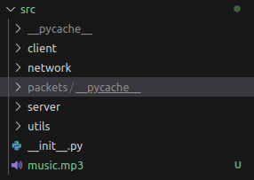
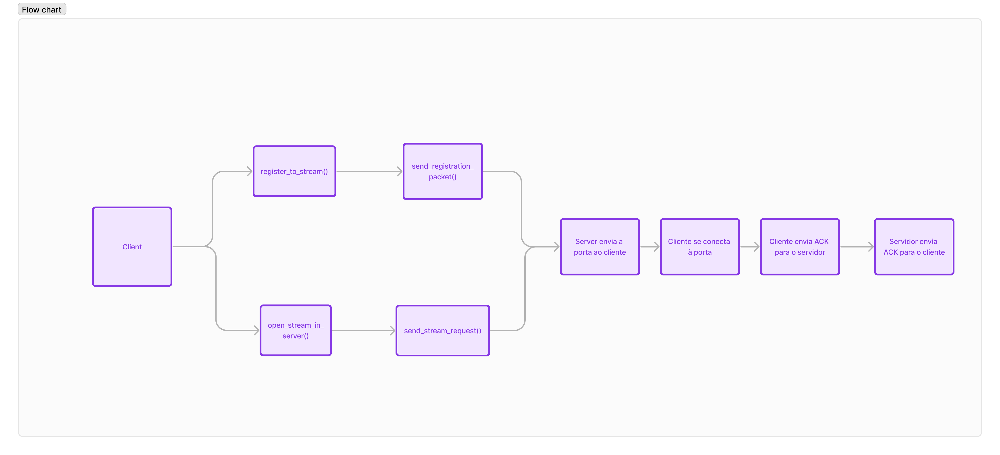
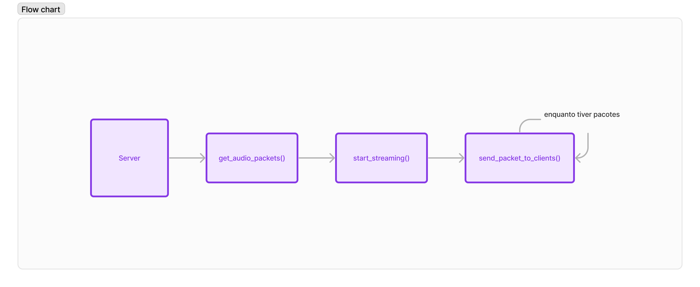

Nico Iancoski Guimarães Ramos
Thales Gabriel Carvalho de Lima
O objetivo do trabalho foi criar uma aplicação de Streaming UDP, que consiste em um servidor que envia uma musica para um cliente, que por sua vez, recebe a musica e a reproduz.
Para isso a dupla optou por utilizar a linguagem de programação Python, que possui diversas bibliotecas, como a utilizada para trabalhar com sockets a qual facilita a implementação
Essa sessão tem como objetivo descrever a estrutura de arquivos do projeto. O projeto possui 4 pastas principais, client que trata da implementação do cliente, server que trata da implementação do servidor, network que trata da implementação do protocolo de rede e utils que contem funções auxiliares.
Este protocolo tem como objetivo descrever um método para transmitir simultaneamente músicas para diferentes grupos de clientes. Para isso, possui mais duas fases: a fase de handshake e a fase de streaming.
Na fase de handshake o cliente inicialmente escolhe entre criar uma nova stream ou se conectar a uma stream já existente. caso escolha entrar em uma stream já existente, o cliente envia um pacote pedindo para ser adicionado a stream, e o servidor responde com um pacote contendo o número da porta que o cliente deve se conectar para receber a stream. Caso o cliente escolha criar uma nova stream, o cliente envia um pacote pedindo para criar uma nova stream, e o servidor cria uma nova stream e envia para o cliente o numero da porta que ele deve se conectar para receber a stream.
Em ambos os casos o cliente envia um ACK para o servidor, e o servidor envia um ACK para o cliente.
Antes do inicio da fase de streaming o servidor gera os pacotes de audio com o tamanho de 1024 bytes, e os armazena em uma lista. Ao iniciar a fase de streaming o servidor envia o primeiro pacote da lista para o cliente que por sua vez o coloca em um buffer de reprodução, é importante salientar que o servidor para de escutar apos o handshake, logo o cliente não envia um ACK para os pacotes de audio.
Inicialmente a dupla teve dificuldade pois a principio iria criar um streaming de video, porém não conseguimos fazer com que a reprodução ocoresse da maneira satisfatória, logo optamos por criar um streaming de audio. No início da implementação utilizamos uma biblioteca que necessitava que o cliente reabrisse o player de audio a cada pacote recebido, porém isso causava travamentos na reprodução, então optamos por procurar uma bibliotaca que não precisasse desse processo.
Além disso tivemos problemas com a reprodução dos pacotes nos computadores do Departamento de Informática, o cliente conseguia receber os pacotes porém não conseguia reproduzir, descobrimos (um pouco em cima da hora) que o problema estava relacionado com o uso da alsa para debug
Tivemos também muitas dificuldades com os endereços IP (e com a falta deles). Pois ao testar o programa em nossos computadores pessoais não conseguimos realizar inicialmente a conexão entre o cliente e o servidor pois aparentemente o comando "ip addr" estava retornando apenas um endereço para uso local na rede, e não o endereço IP da maquina na rede.
Inicialmente haviamos utilizado apenas endereços IPV6 no programa, porém percebemos que os computadores dos laboratórios do departamento utilizavam apenas o IPV4 (e utilizavam o hostname como o nome da maquina) por causa disso tivemos que adicionar a flag "-4" ao executar o MainClient.py e o MainServer.py para informar que para essas maquinas usaremos o IPV4 o que muda algumas partes do processamento
O código fonte do programa pode ser encontrado AQUI!